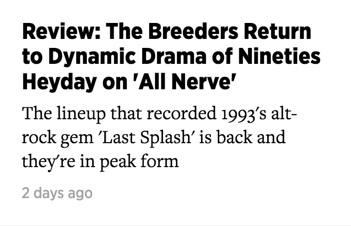
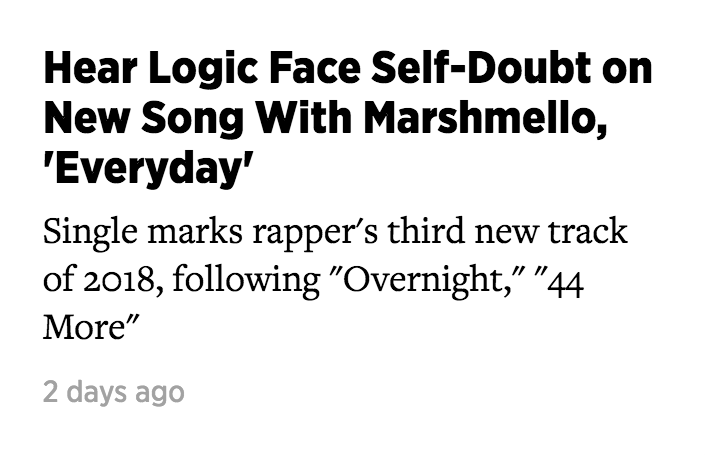
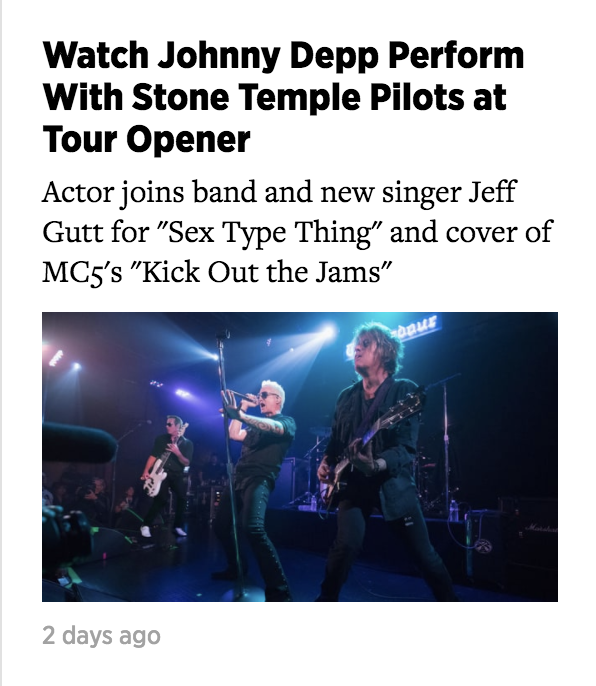

News
Music
David Bowie IS
Art
Food
David Bowie Exhibit Details Exclusive Vinyl Releases, Rare Recordings
By Jon Blistein
Bon Iver's Manager on Decision to Enter Wisconsin Congressional Campaign
By Jon Blistein
  
 David Bowie Exhibit Details Exclusive Vinyl Releases, Rare Recordings
David Bowie Exhibit Details Exclusive Vinyl Releases, Rare Recordings Bon Iver's Manager on Decision to Enter Wisconsin Congressional Campaign
Bon Iver's Manager on Decision to Enter Wisconsin Congressional Campaign